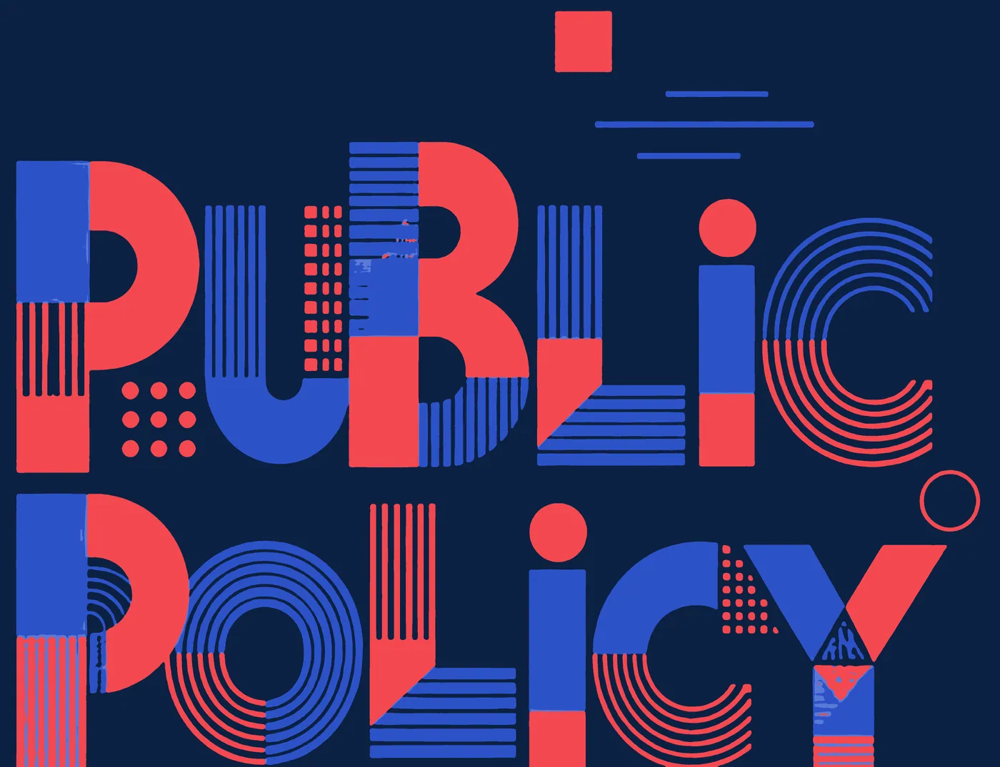
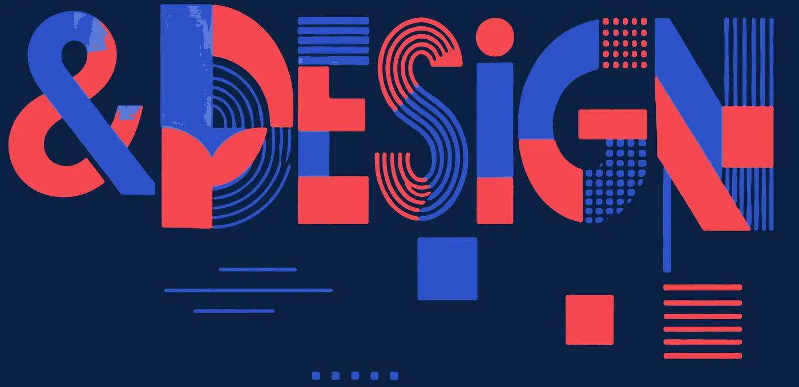

공공디자인 페스티벌 2026 포럼 아카이브
2026
정책을 위한
공공디자인
Policy By Public Design
공공디자인, 정책의 언어가 되다.
2026.10.28.Wed.
문화역서울284 RTO
포럼 발제자 일동
Edited by 이현성


Preface
책을 펴내며
2026년 10월 28일, 문화역서울284에서 「2026 정책을 위한 공공디자인(Policy By Public Design)」 포럼이 열렸다. 공공디자인 페스티벌 2026의 학술 행사로 마련된 이 포럼은 '공공디자인, 정책의 언어가 되다'를 주제로 삼았다. 이 책은 포럼의 여섯 발제를 각 필자의 글로 다시 정리해 엮은 것이다.
「공공디자인의 진흥에 관한 법률」이 제정된 지 10년이 지났다. 그동안 공공디자인은 가로시설물과 경관을 정비하는 일에서 출발해, 사회 갈등을 예방하고 시민의 건강과 안전을 돌보는 일로 범위를 넓혀 왔다. 그러나 정책을 세우고 집행하는 자리에서 디자인은 여전히 사업의 마지막에 덧입히는 포장으로 여겨지는 경우가 많다. 제9회 전국동시지방선거 당선인 238명의 공약 1,190건을 분석하면, 디자인을 직접 언급한 공약은 12건(1.0%)에 그친다. 그러나 디자인이라는 말을 쓰지 않았을 뿐 공간과 시설, 정보와 서비스를 통해 디자인이 이행의 수단이 될 수 있는 공약은 39.0%에 이른다. 정책은 이미 디자인을 필요로 하지만, 둘을 잇는 언어와 방법은 아직 충분히 마련되지 않았다.
Presenters
발제자별로 읽기
정책을 위한
공공디자인Policy By Public Design
1부사회 갈등 예방 그리고 디자인
Social Conflict Prevention and Design
하나의 사회 갈등을 두고 행정과 연구가 함께 걸어온 과정을 다룬다. 보행 공간의 흡연 갈등을 5년에 걸친 실험과 사업으로 관리 가능한 정책 영역으로 바꾼 강남구의 경험과, 흡연부스 안에 놓일 담배 유해성분 정보를 시민이 제대로 읽게 하는 공중 보건 정보 디자인을 차례로 살핀다.
- Chapter 1 분리형 흡연부스를 통한 민원 해결이미정 / 강남구청 공공디자인팀장 강남구는 2022년부터 5년 동안 공공디자인 실험과 사업을 이어 가며 보도 위의 흡연 갈등을 다루어 왔다. 틈새 공간의 환경 개선에서 시작해 분리형 흡연부스와 금연거리 지정에 이르는 이 과정은, 디자인이 규제만으로 풀리지 않던 문제를 관리 가능한 정책 영역으로 옮겨 놓은 사례다.읽기 ›
- Chapter 2 공중 보건 정보 디자인: 담배 유해 성분 표기정수지 / 홍익대학교 공공디자인연구센터 선임연구원 2026년 10월, 담배 제품마다 들어 있는 유해성분의 수치가 처음 공개되었다. 그러나 공개된 정보가 곧 전달된 정보는 아니다. 이 장은 숫자가 오해를 낳지 않고 '어느 담배에든 해로운 성분이 이만큼 들어 있다'는 사실로 읽히도록, 정책과 사람 사이를 설계하는 공중 보건 정보 디자인의 방법을 다룬다.읽기 ›
정책을 위한
공공디자인Policy By Public Design
2부공공정책 그리고 디자인
Public Policy and Design
도시와 정책, 교육과 산업으로 시야를 넓힌다. 서울의 디자인 정책, 다섯 정책 영역에서 디자인이 정책을 구현하는 방식, 정책의 언어를 구사할 사람을 기르는 대학 교육, 세계디자인수도 부산의 해양산업에서 디자인이 맡을 역할을 다룬다.
- Chapter 3 서울의 공공디자인과 정책김주연 / 홍익대학교 교수, 제1대 서울 총괄공공디자이너 서울의 디자인 정책은 도시의 기본을 세우는 일에서 출발해 재미와 즐거움으로 도시의 정체성을 만드는 일로 옮겨 왔고, 이제 시민의 건강한 삶을 돌보는 일로 나아가려 한다. 이 장은 디자인 서울 1.0, 2.0, 3.0의 흐름을 따라 각 시기의 목표와 사업을 살피고, 디자인 정책이 한 번의 의지에 그치지 않고 지속되기 위한 조건을 묻는다.읽기 ›
- Chapter 4 PbD: Policy by Design이현성 / 홍익대학교 공공디자인전공 교수 정책과 공공디자인은 공공 영역의 문제를 해결한다는 같은 목적을 지니고 수단만 달리한다. 이 장은 정책이 시민과 만나는 일상의 접점에서 디자인이 정책을 보이게, 느끼게, 시험하게, 근거를 남기게, 함께 판단하게 한다는 점을 밝히고, 안전, 참여, 포용, 정책실험, 회복력의 다섯 정책 영역에서 국내외 사례로 그 실행 방식을 살핀다.읽기 ›
- Chapter 5 City as Campus: 부산형 공공디자인 교육모델장주영 / 동서대학교 디자인대학 학장 공공디자인이 정책의 언어가 되려면 그 언어를 구사할 사람이 있어야 한다. 이 장은 도시의 실제 문제와 대학의 교육과정, 행정의 정책 과정을 하나의 순환으로 잇는 부산형 교육모델 City as Campus를 제안한다. 학생 프로젝트가 전시로 끝나지 않고 정책의 초기 근거로 쓰이게 하는 교육 체계와 2028 세계디자인수도 부산을 위한 제안을 함께 다룬다.읽기 ›
- Chapter 6 WDC 부산과 해양정책을 위한 디자인이성필 / 동서대학교 융합디자인연구소 센터장 2028 세계디자인수도 부산이 남길 유산은 도시의 주력 산업과 디자인이 함께 성장하는 구조에서 나와야 한다. 이 장은 서부산을 해양 AI 산업 전환의 실증지로 보고, 기술 중심의 해양산업 과제마다 디자인이 맡을 수 있는 다섯 가지 사업을 제안한다.읽기 ›